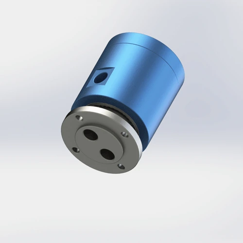

How to select a pneumatic rotary joint for packaging machinery: rotary sealing heads, indexing tables, vacuum stations, grippers, and filling mechanisms. Pressure, RPM, passage count, and food-grade compatibility based on 200,000+ units of Begapunk field experience.
Who this is for: Packaging machinery OEMs, automation engineers, and maintenance managers specifying pneumatic rotary components for high-cycle packaging lines.
Packaging machinery runs at 60–200 RPM for 16–24 hours per shift. A rotary joint on a rotary sealing head or indexing table rotates 172,800 times per day at 120 RPM continuous duty. Standard seals rated for 5,000 hours fail in 6–8 weeks under this load. The result is not just a leak — it is contaminated product, rejected batches, and unplanned downtime during peak production.
At Begapunk, packaging machinery accounts for roughly 22% of our custom rotary joint inquiries. The most frequent request is not for a catalog model — it is for a compact layout that fits a specific machine envelope, handles both vacuum and compressed air on independent channels, and can be replaced in under 10 minutes without disassembling the turret.
Common functions include pneumatic clamping, vacuum pickup, bag or pouch opening, rotary sealing, blow-off cleaning, and air cylinder actuation. Choosing the right passage count prevents control signals from interfering with one another — and prevents a single failed seal from contaminating an entire production batch.

Typical requirementCompact pneumatic rotary joint with low leakage, reliable sealing, and simple replacement for high-cycle packaging lines.Confirm rotation style, indexing frequency, and whether the machine runs intermittently or 24/7. A line running 120 RPM continuous generates 172,800 rotations per day. Standard FKM seals rated for 5,000 hours will fail in 6–8 weeks. Specify PTFE composite seals for any application above 200 RPM or continuous duty. Reference: SMRP guidelines suggest a 20–30% safety margin on seal life ratings for continuous-duty rotating equipment.
Each pneumatic function needs its own isolated passage:
A 4-passage layout (vacuum + clamp + unclamp + blow-off) is common for complex rotary stations. Never share a passage between vacuum and compressed air — the pressure differential destroys seal geometry.
Many packaging stations have limited envelope space — often <50 mm radial clearance around the rotation axis. Body diameter, port direction, and hose routing should be checked before selecting a model. Compact threaded mounts (M5 or G1/8) are often required instead of standard G1/4. Begapunk provides free 3D STEP files for fit verification before production.
| Machine Area | Common Function | Selection Focus | Begapunk Direction |
|---|---|---|---|
| Rotary sealing head | Air cylinder and sealing pressure | Compact body, stable air path, easy maintenance | BP-2P-0001 or BP-3P-0004 |
| Indexing table | Clamp, release, and blow-off | Multiple passages, flange mounting, anti-rotation support | BP-2P-0001, BP-3P-0004, BP-4P-30-0001 |
| Vacuum packaging station | Vacuum and air release | Separate passages, good sealing, clean hose routing | Custom air/vacuum rotary union |
| Form-fill-seal line | Film tension, sealing, and cutting | Food-grade seals, washdown-compatible body, compact mount | BP-2P-0001 (SS option) or custom FDA layout |
A packaging line at 120 RPM runs 172,800 rotations per day. Standard FKM seals rated for 5,000 hours fail in 6–8 weeks. The maintenance team blames "cheap seals" — but the specification was wrong. Rule: For continuous-duty packaging lines, specify PTFE composite seals and plan replacement at 60% of rated life (typically every 10–12 months for PTFE, every 6–8 months for FKM).
Some engineers try to save cost by using a 2-passage joint for vacuum + compressed air on shared channels. The pressure differential (0.6 MPa air vs. -0.08 MPa vacuum) causes the seal lip to deform and extrude. Within 2 weeks, the vacuum side leaks air and the compressed air side loses pressure. Rule: Each medium needs its own mechanically isolated passage with its own seal assembly.
Standard AL6061 bodies and FKM seals are not FDA-compliant. In food and pharmaceutical packaging, washdown chemicals and steam sterilization degrade standard materials. A failed seal in a food packaging line does not just leak — it contaminates product and triggers a recall. Rule: Specify 316 stainless steel body + FDA-approved PTFE seals for any food-grade or washdown application. Document material certificates for audit trails.
Packaging lines cannot afford long downtime. Design the rotary joint mounting so it can be replaced in under 10 minutes. Use flange mount with through-bolts (not threaded, which requires disassembling hoses). Keep a spare joint pre-assembled with hoses attached — swap the whole assembly, not just the joint.
Packaging plants often have moist, oil-contaminated shop air. Moisture causes AL6061 bodies to corrode internally within 6–12 months. Oil contamination degrades PTFE seals and creates a food safety hazard. Install a 25-micron filter + coalescing filter upstream. For food-grade lines, use oil-free compressors and 10-micron filtration.
Do not wait for visible leaks. Schedule seal replacement at 60% of rated life:
Keep replacement seal kits at the workstation, not in central stores. A 15-minute seal change becomes a 2-hour job if the technician must walk to stores and discover the wrong part number.
Send the machine function, passage count, pressure, RPM, mounting drawing, and whether food-grade compatibility is required. Begapunk can help choose a standard model or quote a custom pneumatic rotary joint with 3D fit verification.
Pneumatic rotary joints are used on rotary sealing heads, indexing tables, filling stations, pneumatic grippers, rotary actuators, and vacuum-assisted packaging systems. Each application requires a specific passage count, pressure rating, and seal material based on cycle speed and media type.
Compact 1-passage, 2-passage, and 3-passage pneumatic rotary joints are most common. Multi-passage designs (4P or 8P) are used when clamping, vacuum, blow-off, and sealing air must be controlled independently. Food-grade applications require FDA-compatible PTFE seals and 316 stainless steel body options.
Yes, when passages are mechanically isolated with independent seal assemblies. Cross-contamination between vacuum and compressed air destroys package seal integrity. Each channel must have its own seal ring, and the vacuum side typically operates at -0.04 to -0.08 MPa while the air side runs at 0.3–0.6 MPa.
The most common mistake is ignoring cycle count. A packaging line running 24/7 at 120 RPM generates 172,800 rotations per day. Standard duty seals rated for 5,000 hours will fail in 6–8 weeks under this load. Specify high-cycle PTFE seals and plan preventive replacement at 60% of rated seal life.
Many machines can use standard 1P, 2P, or 3P models. Custom design is useful when space is constrained, port direction is fixed by the machine frame, or when a specific mounting pattern (e.g., M5 threads for compact stations) is required. Begapunk provides free 3D STEP files for fit verification before production.
Technical Note: All pressure ratings and RPM specifications referenced in this article are based on Begapunk BP-series standard pneumatic rotary joints. Actual performance depends on operating conditions and maintenance practices. For applications outside standard ratings, consult factory engineering before specification. Last updated: June 11, 2026.